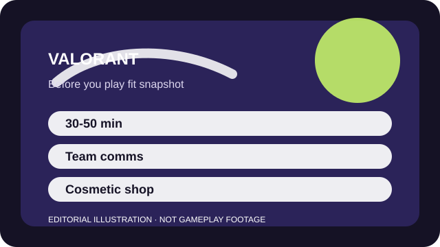

BEFORE YOU PLAY
What this page is and is not
This is a sourced editorial fit profile. It is designed to help with a yes-or-no play decision, and it does not claim a scored hands-on review.
VALORANT asks whether you enjoy the tension between short bursts of action and longer stretches of setup, sound reading, and angle discipline. If that sounds appealing, the game rewards study. If not, the downtime can feel punishing.
The first-session loop to judge is simple: Win structured rounds by combining precise gunplay, map control, economy decisions, and agent utility.
The durable progression is player skill and agent familiarity more than account power.

FIT SNAPSHOT
VALORANT at a glance
| Genre | Tactical hero shooter |
|---|---|
| Platforms | PC, PlayStation, Xbox |
| Business model | Free-to-play competitive shooter with cosmetic bundles and battle passes. |
| Typical session | 30-50 minute matches with a real time block for queueing and focus. |
| Play style | round-based tactical shooter |
| Learning barrier | Basic objectives are easy to read, but recoil control, timing, and map vocabulary matter early. |
| Social shape | Solo queue works, yet the game improves when you can communicate calmly or queue with at least one friend. |
WHO IT FITS
Best fit, likely friction, and the social reality
players who like patient round tension and are willing to improve with a regular small agent pool
players who want casual drop-in chaos or dislike communication-heavy team shooters
Solo queue works, yet the game improves when you can communicate calmly or queue with at least one friend.
The durable progression is player skill and agent familiarity more than account power.
FIRST SESSION PLAN
How to test the fit in one evening
- Finish the tutorial and spend a few minutes in the range before touching matchmade modes.
- Pick one straightforward agent and learn what your utility is supposed to do in plain language.
- Play unrated while focusing on crosshair placement and sound cues instead of highlight plays.
- Learn two useful callouts per map rather than trying to memorize everything immediately.
Use the first session to answer these fit questions instead of judging rank, win rate, or store value immediately.
- Do you enjoy long rounds where a single mistake can matter?
- Are you happy specializing in a small agent pool for a while?
- Can you accept practice time before ranked begins to feel comfortable?
TIME, COST, AND COMMITMENT
What you are really signing up for
| Session budget | 30-50 minute matches with a real time block for queueing and focus. |
|---|---|
| Social demand | Solo queue works, yet the game improves when you can communicate calmly or queue with at least one friend. |
| Progression shape | The durable progression is player skill and agent familiarity more than account power. |
| Spending pressure | Competitive access is free. Monetization is centered on premium skins, bundles, and seasonal cosmetics. |
A single match already needs a real chunk of time, and improvement usually means accepting slow repetition instead of looking for instant momentum.
Competitive access is free. Monetization is centered on premium skins, bundles, and seasonal cosmetics.
SOURCES AND LIMITS
What was checked, and what can change
- Map pools and mode availability can rotate between acts.
- Agent balance and role expectations shift with live patches.
- Skin bundles and battle-pass offerings change on a seasonal cadence.
This profile uses official game pages and defensible general product knowledge to frame the player fit. It does not claim live testing across every platform, accessibility need, or current event rotation.